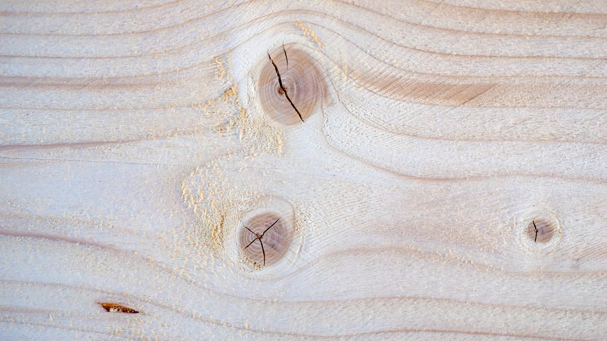

Lo que hay dentro de un tronco
Toda pieza de madera estuvo viva, y eso explica casi todo lo que hace después.
Coge un lápiz de madera y míralo de canto. Esa pieza estuvo viva: creció unos milímetros al año, bebió agua por dentro y se defendió de los insectos. Ningún otro material del taller puede decir eso.
La pregunta de hoy: si cortas un tronco por la mitad, verás que la madera del centro es más oscura que la de fuera. ¿Por qué? ¿Y cuál de las dos usarías para hacer un mueble que tiene que durar?
La madera es el material que forma el tronco de los árboles. Por dentro son fibras de celulosa pegadas con lignina: por eso es resistente en el sentido de la fibra y se raja en el sentido contrario.
| Capa | Dónde está | Qué hace |
|---|---|---|
| Corteza | La capa exterior | Protege al tronco |
| Cámbium | Capa fina, entre la corteza y la madera | Transporta sustancias y hace crecer al árbol |
| Albura | La madera de fuera | Más clara y blanda: es la más joven |
| Duramen | La madera de dentro | Más oscura y dura: es la más antigua |
| Médula | El centro | La parte central del tronco |
Ahí está la respuesta al reto: lo oscuro del centro es el duramen, y es el que se busca para un mueble que tenga que durar.
Las capas se preguntan en orden y con su función. Truco para no liarlos: albura suena a alba, blanca; duramen lleva dentro duro.
Y una cosa que no es obvia: la madera quema en verde
Al arder, la madera suelta menos CO2 del que el árbol absorbió mientras crecía. Por eso se dice que su balance de carbono es negativo y cuenta como energía renovable — siempre que salga de una explotación sostenible, es decir, que se replante lo que se tala.
Qué hay que hacer
- Buscad la foto de un corte de tronco (vale un taco de leña de casa).
- Señalad sobre ella las cinco capas con su nombre.
- Contad los anillos y decid cuántos años tenía el árbol.
- Mirad el grosor de los anillos: los años de más lluvia dan anillos más anchos. ¿Se nota algún año malo?
Cómo se evalúa
- Las cinco capas, bien colocadas (5 puntos).
- La edad, contada y justificada (3 puntos).
- La lectura de los anillos anchos y estrechos (2 puntos).
- ¿De qué está hecha la madera por dentro?
Ver respuesta
De fibras de celulosa unidas con lignina.
- ¿Cuál es más joven, la albura o el duramen?
Ver respuesta
La albura: es la de fuera, más clara y más blanda.
- ¿Por qué se dice que el balance de carbono de la madera es negativo?
Ver respuesta
Porque al quemarse suelta menos CO2 del que el árbol absorbió al crecer.
Siete operaciones y ninguna se salta
Entre el árbol en pie y el tablón hay siete pasos. El último, el secado, es el que más se olvida y el que más estropea.
Un tablón de pino cuesta unos pocos euros. Entre el árbol en pie y ese tablón hay siete operaciones, camiones, una sierra enorme y meses de espera.
El reto: poned en orden estas siete palabras sin mirar el libro — secado, apeo, serrado, tronzado, transporte, desramado, descortezado — y justificad por qué ese orden y no otro.
Del bosque al aserradero, en este orden:
| # | Operación | En qué consiste |
|---|---|---|
| 1 | Apeo o tala | Se corta el tronco cerca de la base y se derriba |
| 2 | Desramado | Se cortan las ramas para dejar el tronco cilíndrico |
| 3 | Tronzado | Se corta en trozos para que quepa en el camión |
| 4 | Descortezado | Se quita la corteza y el tronco queda limpio |
| 5 | Transporte | De la zona de tala al aserradero |
| 6 | Serrado | Se corta para obtener las formas comerciales |
| 7 | Secado | Se conservan las piezas hasta que pierden el agua |
La madera recién cortada lleva mucha agua dentro. Si se monta un mueble con ella, al secarse encoge — y lo hace de forma desigual—: se abren las juntas y la pieza se alabea. Por eso el secado es una operación más, y de las lentas.
Duras y blandas: no es lo que parece
Las maderas de coníferas (pino, abeto) se llaman blandas: crecen rápido, son baratas y fáciles de trabajar. Las de frondosas (roble, haya, nogal) se llaman duras: crecen despacio, cuestan más y aguantan más. La balsa es de frondosa y es la madera más blanda que existe, así que el nombre es una costumbre del oficio, no una regla.
Qué hay que hacer
- Dibujad el diagrama de flujo de las siete operaciones, una caja por paso.
- Al lado de cada caja, escribid qué se estropearía si ese paso se saltara.
- Buscad qué es la colofonia y de qué árbol sale. Una línea.
Cómo se evalúa
- Las siete operaciones en orden (5 puntos).
- La consecuencia de saltarse cada paso (4 puntos).
- La colofonia (1 punto).
- ¿Qué diferencia hay entre tronzar y serrar?
Ver respuesta
Tronzar es cortar el tronco en trozos para transportarlo; serrar es cortarlo ya en el aserradero para sacar tablas y tablones.
- ¿Por qué no se puede usar madera recién cortada?
Ver respuesta
Porque lleva agua dentro: al secarse encoge y se alabea, y el mueble se abre por las juntas.
- Pino y roble: ¿cuál es de conífera y cuál de frondosa?
Ver respuesta
El pino es conífera (blanda) y el roble, frondosa (dura).
Por qué tu armario no es de madera maciza
La madera flota, aísla y suena. Y aun así, casi todos los muebles llevan tablero: hay una razón.
Abre el armario de tu habitación y mira el canto de una balda. Si ves virutas prensadas, eso no es madera maciza: es un derivado. Y probablemente el mueble entero lo sea.
El reto: ¿por qué un fabricante de muebles preferiría un tablero de virutas antes que un tablón de roble? Escribid dos razones antes de seguir.
Lo que sabe hacer la madera
- Poco densa: casi todas flotan. De ahí las barcas.
- Aislante del calor y de la electricidad. De ahí los mangos de herramienta.
- Resistente a tracción y a compresión. De ahí las vigas.
- Sonora: transmite el sonido según su densidad. De ahí las guitarras —y el corcho como aislante acústico—.
- Biodegradable y no contaminante.
- Combustible barato, con el balance de carbono de la sesión 1.
Por dentro es un manojo de tubos
El tronco está formado por millones de fibras alargadas, paralelas al eje del árbol, que en vida transportaban agua. Imagina un paquete de pajitas pegadas entre sí: fuertes a lo largo, fáciles de separar a lo ancho.
La madera, por dentro
Fibra o veta: dirección en la que están orientadas las células alargadas del tronco.
La madera es anisótropa: sus propiedades cambian según la dirección. Resiste mucho a lo largo de la veta y poco a lo ancho.
Los anillos de crecimiento marcan un año cada uno: claro el de primavera, oscuro el de verano. Se pueden contar.
Blandas y duras
Los dos grandes grupos
- Maderas blandas: de árboles de hoja perenne, que crecen rápido —pino, abeto, chopo—. Baratas, ligeras, fáciles de trabajar. Es lo que hay en el taller del instituto.
- Maderas duras: de hoja caduca, de crecimiento lento —roble, haya, nogal—. Caras, pesadas, resistentes y bonitas. Muebles y suelos.
Cuidado con los nombres: la balsa es una madera dura aunque se corte con la uña. La clasificación es botánica, no de dureza real.

Foto de Eleonora Vokueva en Pexels. Es de su autor y no forma parte del material publicado bajo la licencia de esta página.
Los derivados: arreglar lo que la madera hace mal
Cada derivado se inventó para resolver un defecto concreto de la madera maciza. No son sucedáneos baratos: son soluciones técnicas.
Tableros derivados
- Contrachapado: capas finas encoladas con la veta cruzada 90°. Resuelve: la anisotropía y el alabeo.
- Aglomerado: virutas prensadas con cola. Resuelve: aprovechar restos y hacer tableros grandes y baratos.
- DM o MDF: fibras muy finas prensadas. Resuelve: dar una superficie lisa y uniforme, perfecta para pintar o chapar.
- Chapa: lámina finísima de madera noble pegada sobre un tablero barato. Resuelve: el aspecto del roble al precio del aglomerado.
Los derivados: cuando conviene deshacer la madera para rehacerla
| Tablero | Cómo se hace | Cómo es | Dónde se usa |
|---|---|---|---|
| Aglomerado | Astillas de madera con cola, prensadas | Rugoso, poroso, pesado. No admite acabados | Muebles económicos, forrados de melamina |
| Contrachapado | Láminas encoladas y prensadas, cada una girada | Liso, estable, ligero y resistente | Uso estructural, muebles, barcos, embalajes |
| DM (MDF/HDF) | Fibras de madera con resinas, prensadas | Liso y uniforme. Sí admite acabados. Ligero | Suelos laminados, molduras, puertas |
Dos razones: cuestan menos y, sobre todo, vienen en tableros grandes y uniformes que no tienen nudos ni se alabean. Una tabla maciza de dos metros es cara, rara y se mueve con la humedad; un tablero de DM sale siempre igual.
Qué hay que hacer
Material: una cubeta con agua y muestras de pino, abeto, roble y, si la hay, alguna madera pesada.
- Antes de echarlas al agua, apostad: ¿cuál se hunde más?
- Echadlas y anotad cuánto asoma cada una.
- Buscad la densidad de esas tres maderas en internet y ordenadlas.
- La densidad del agua es 1 g/cm³. ¿Hay alguna madera que no flote? Buscad una.
Cómo se evalúa
- La predicción, hecha ANTES y por escrito (2 puntos).
- Las densidades, con su fuente (4 puntos).
- Explicar por qué flota lo que flota (4 puntos).
- ¿Qué diferencia hay entre aglomerado y contrachapado?
Ver respuesta
El aglomerado son astillas prensadas con cola; el contrachapado, láminas enteras encoladas. El segundo es más resistente y estable.
- ¿Qué tablero usarías para un suelo laminado, y por qué?
Ver respuesta
DM (MDF/HDF): es liso, uniforme y admite acabados, que es lo que hace falta para imitar una superficie.
- ¿Por qué casi todas las maderas flotan?
Ver respuesta
Porque su densidad es menor que la del agua (1 g/cm³).
Medir, sujetar, cortar — y en ese orden
Casi ninguna pieza sale torcida por serrar mal: sale torcida por marcar mal o por no sujetar.
En el taller, el 90 % de las piezas que salen torcidas no se estropearon al cortar: se estropearon al marcar o porque la pieza no estaba sujeta.
El reto: mirad esta lista —serrucho, sargento, escuadra, lija, barrena— y ordenadla según cuándo se usa cada una. Luego comprobad si acertasteis.
Trabajar la madera son siempre las mismas siete operaciones, en este orden: medir y marcar → sujetar → cortar → perforar → limar y lijar → unir → acabado.
| Operación | Herramientas | Seguridad |
|---|---|---|
| Medir y marcar | Escuadra fija y móvil, regla metálica, lápiz de carpintero, compás | Nada especial: orden en la mesa |
| Sujetar | Tornillo de banco, gato o sargento, pinzas | Sin colgantes, pulseras ni anillos; pelo recogido; ojo a los atrapamientos |
| Cortar | Serrucho (a 45°), sierra de costilla, segueta o sierra de marquetería, cúter con guía | Guantes. No se corta nunca una pieza suelta |
| Perforar | Barrena, berbiquí, taladro de columna, brocas de madera | Guantes y gafas: saltan virutas |
| Limar y lijar | Escofina (diente grueso), lima (diente fino), papel de lija | Guantes: abrasiones |
| Unir | Cola, clavos, tornillos, espigas | Cuidado con el martillo y los dedos |
| Acabado | Barniz, pintura, cera | Ventilación: los disolventes se respiran |
- La pieza va sujeta antes de tocarla con un filo.
- Guantes para cortar; guantes y gafas para taladrar.
- Si te distraen, paras. El serrucho no espera.
Escofina o lima: el detalle que se pregunta
Las dos quitan material. La escofina tiene los dientes gruesos y se usa para el ajuste basto; la lima los tiene finos y se usa para alisar. Primero la escofina, después la lima, y al final el papel de lija.
Qué hay que hacer
Material: listones de pino, cola, lija, escuadra y sargento.
- Marcad con escuadra y lápiz cuatro listones para un marco de 12×9 cm.
- Sujetad cada pieza con el sargento antes de serrar. Comprobadlo entre los dos.
- Serrad con el serrucho inclinado y con guantes.
- Lijad los cuatro cantos y encolad en escuadra.
Cómo se evalúa
- Las cuatro piezas miden lo que tenían que medir, ±2 mm (4 puntos).
- El marco cierra en escuadra (3 puntos).
- Seguridad: nunca se sierra sin sujetar ni sin guantes (3 puntos).
- ¿Cuál es la diferencia entre escofina y lima?
Ver respuesta
La escofina tiene dientes gruesos (desbaste) y la lima, finos (alisado).
- ¿Qué hay que ponerse para taladrar, y por qué?
Ver respuesta
Guantes y gafas: al perforar saltan virutas y hay riesgo de atrapamiento.
- ¿Para qué sirve el sargento?
Ver respuesta
Para sujetar la pieza a la mesa o mantener dos piezas unidas mientras se encolan.
Por dónde se rompe de verdad un mueble
Casi nada se parte por el medio de una tabla: se suelta por donde estaba unido. Y el acabado no es para que quede bonito.
Un mueble casi nunca se rompe por el medio de una tabla. Se rompe por donde estaba unido: se descuelga una balda, se afloja una pata, se abre una esquina.
El reto: mirad una silla del aula. ¿Cuántas uniones distintas encontráis? ¿Cuáles se podrían desmontar con un destornillador y cuáles no?
Las uniones se parten en dos familias, y la diferencia es una sola pregunta: ¿se puede deshacer sin romper la pieza?
| Tipo | Con qué | Cuándo se usa |
|---|---|---|
| Desmontables | Tornillos para madera | Lo normal en un mueble: aguanta y se puede abrir |
| Herrajes, bisagras, escuadras metálicas | Puertas, esquinas que sufren | |
| Fijas | Cola blanca (acetato de polivinilo) | La unión más común del taller. Necesita presión y tiempo |
| Clavos y puntas | Rápido y barato; aguanta mal si se tira del clavo | |
| Espigas encoladas, caja y espíga | Muebles de calidad: la madera se traba consigo misma |
Una unión encolada aguanta más que la propia madera si se hace bien, y eso significa tres cosas: superficies limpias y lijadas, cola en las dos caras y sargento puesto hasta que fragua. Sin presión no hay unión; hay dos tablas pegadas.
El acabado no es para que quede bonito
Es para que dure. La madera al aire absorbe humedad, se mancha, la atacan los insectos y el sol la agrisa. El acabado la sella.
- Lijado fino: siempre en el sentido de la fibra. Al revés se raya y se ve para siempre debajo del barniz.
- Tapaporos: cierra el poro para que el barniz no se lo trague.
- Barniz: transparente, deja ver la veta y protege.
- Pintura: tapa la veta; sirve para madera fea o para tableros.
- Cera o aceite: acabado mate, se repara pasando otra mano.
Y una cosa de seguridad: barnices y disolventes se respiran. Ventana abierta.
Qué hay que hacer
Material: seis listones cortos, cola blanca, clavos, tornillos, sargento y un cubo con peso (libros valen).
- Montad tres uniones en L iguales: una encolada, una clavada y una atornillada.
- Antes de probar, escribid cuál creeis que aguantará más y por qué.
- Colgad peso poco a poco de cada una y anotad con cuánto falla.
- Mirad por dónde ha roto cada una: ¿por la cola, por la madera o por el clavo?
Cómo se evalúa
- La predicción, hecha antes y por escrito (2 puntos).
- Las tres uniones, bien ejecutadas —la encolada, con sargento— (4 puntos).
- Explicar por dónde rompió cada una y qué dice eso (4 puntos).
- ¿Qué diferencia hay entre una unión desmontable y una fija?
Ver respuesta
La desmontable se puede deshacer sin romper la pieza (tornillos, herrajes); la fija, no (cola, clavos, espigas).
- ¿Por qué una unión encolada necesita sargento?
Ver respuesta
Porque la cola solo agarra con presión mientras fragua. Sin apretar, quedan dos tablas pegadas de mentira.
- ¿En qué sentido se lija antes de barnizar, y por qué?
Ver respuesta
En el sentido de la fibra. Al revés quedan rayas que el barniz deja a la vista para siempre.
Fabricar papel y cerrar el tema
El papel es madera deshecha. Hacerlo a mano enseña de una vez qué son las fibras.
El papel también sale de la madera: es celulosa deshecha y vuelta a secar en láminas. Hacerlo con papel usado es la forma más rápida de ver por dentro de qué está hecha una hoja.
Material
Papel usado, agua, una cubeta, un marco con tela de mosquitera y, si hay, una batidora.
Qué hay que hacer
- Romped el papel en trozos pequeños y dejadlo en remojo media hora.
- Batidlo hasta que quede una pasta. Eso son las fibras de celulosa sueltas.
- Echad la pasta en la cubeta con agua y pescadla con el marco, en horizontal.
- Dejad escurrir, prensad con un trapo y poned a secar 24 horas.
Cómo se evalúa
- La hoja sale entera y se puede escribir en ella (4 puntos).
- Explicar dónde están las fibras y por qué se pegan al secar (4 puntos).
- Orden y limpieza del puesto (2 puntos).
Lo que tiene que haber quedado del tema
1. ¿Cuál es la capa más interna de la madera del tronco?
2. La madera está formada por…
3. Ordena: apeo, tronzado, desramado.
4. ¿Por qué se seca la madera antes de usarla?
5. Un tablero hecho de astillas prensadas con cola es…
6. ¿Qué madera es de conífera?
7. Antes de serrar, lo primero es…
8. El balance de carbono de la madera es negativo porque…
Se corrige en tu propio navegador: no se envía ni se guarda nada. Las explicaciones aparecen al corregir, tanto en las que aciertes como en las que falles.
Todo el tema, en una tabla
| Pregunta | Respuesta corta |
|---|---|
| ¿Qué es la madera? | Fibras de celulosa unidas con lignina |
| ¿Qué capas tiene el tronco? | Corteza, cámbium, albura, duramen y médula |
| ¿Cómo se obtiene? | Apeo, desramado, tronzado, descortezado, transporte, serrado y secado |
| ¿Qué derivados hay? | Aglomerado, contrachapado y DM |
| ¿Cómo se trabaja? | Medir, sujetar, cortar, perforar, lijar, unir y dar acabado |
| ¿Por qué es sostenible? | Balance de carbono negativo y biodegradable, si la explotación es sostenible |
Lectura de aula
Treinta párrafos numerados y diez preguntas. Ocupa una sesión entera: se lee en voz alta por turnos, un párrafo cada uno, y luego se contesta por escrito. Trae su cabecera para el nombre, el grupo y la fecha.
Descargar el PDFLicencia y uso
Tema 4 · Madera · © 2026 Roberto P. García Llorente, Profesor de Tecnología en Educación Secundaria.
Publicado bajo Creative Commons Reconocimiento-CompartirIgual 4.0 Internacional. Puedes copiarlo, adaptarlo y redistribuirlo, incluso con fines comerciales, siempre que cites la autoría, indiques si lo has modificado y publiques tus versiones derivadas con esta misma licencia.
Cómo citar
Roberto P. García Llorente (2026). Tema 4 · Madera. https://rgllorente82-png.github.io/robertotecnologia/2eso/TyD/tema4/. Bajo licencia CC BY-SA 4.0.
Qué cubre
Los textos, los dibujos y el código de esta página, que son obra propia.
No cubre las fotografías, que proceden de Wikimedia Commons y conservan su propia licencia, indicada bajo cada una. Algunas son de dominio público; las demás están bajo licencias Creative Commons compatibles con esta, y se reproducen citando autoría y licencia como exigen. Tampoco cubre las tipografías, de Google Fonts con su propia licencia.
Otros usos
Para usos que excedan la licencia, abre una incidencia en el repositorio del proyecto.